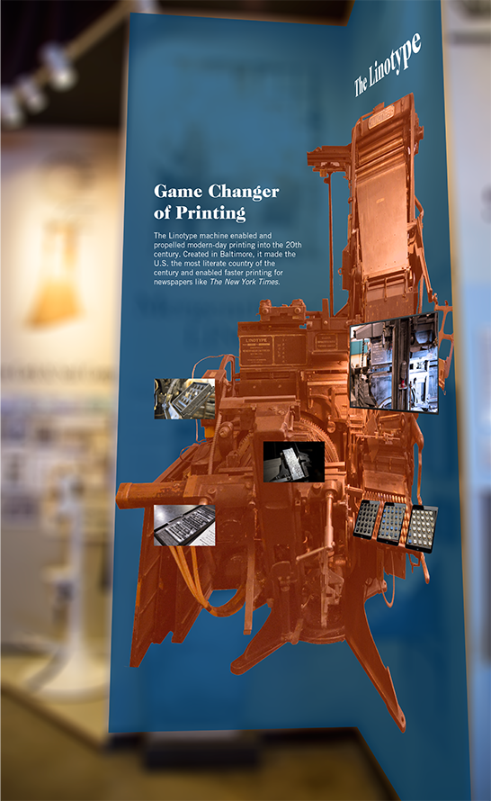
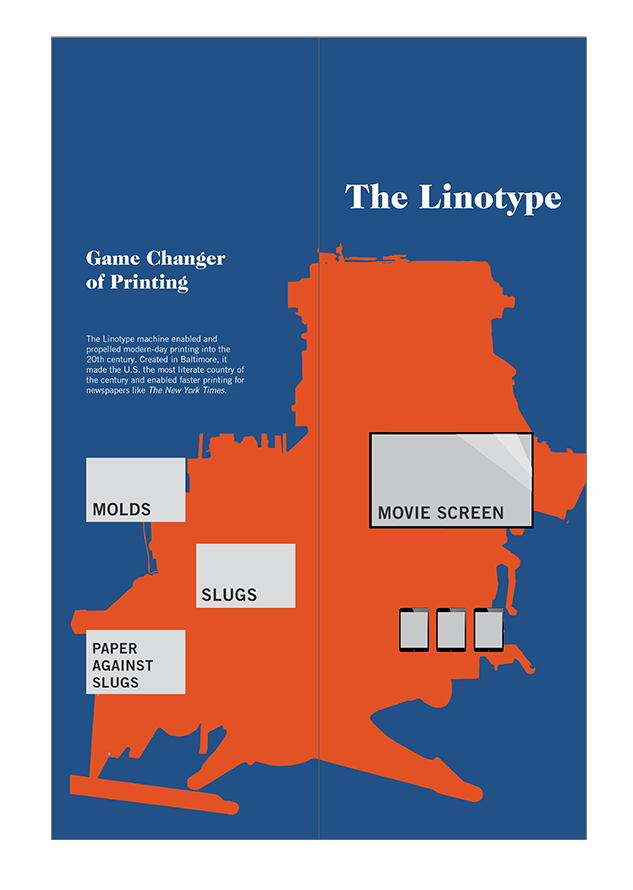

Linotype Exhibition
The linotype, a machine of the 19th century that made the United States the most literate country during the machine's peak, has its origins in Baltimore. Newspapers like The New York Times and The Baltimore Sun were able to drastically lengthen and sensationalize their papers. The Baltimore Museum of Industry features this revolutionary machine in demonstrations and as part of one of its permanent exhibits.

The Design
Taking inspiration from Pinterest, I wanted to add color to the exhibit. My design is meant to inform and engage users from middle schoolers to adults. Using artifacts and screens, the design teaches visitors about how the machine moved the printing industry forward.
